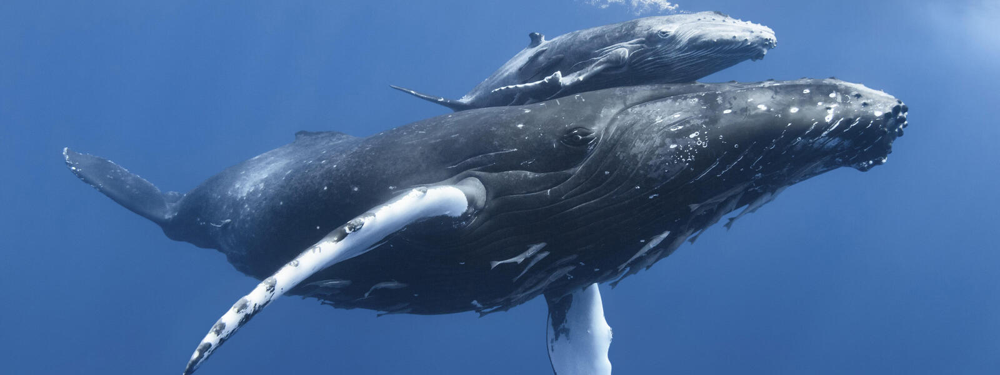

MUSICAL FISH
back to home

BLUE WHALE
ABOUT ME
Whales roam throughout all of the world's oceans, communicating with complex and mysterious sounds. Their sheer size
amazes us: the blue whale can reach lengths of more than 100 feet and weigh up to 200 tons—as much as 33 elephants. Despite living in the water, whales breathe air. And like humans, they are warm-blooded mammals who nurse their young. A
thick layer of fat called blubber insulates them from cold ocean waters. Some whales are known as baleen whales, including blue, right, bowhead, sei, and gray whales. This refers to the fact
that they have special bristle-like structures in their mouths (called baleen) that strain food from the water. Other
whales, such as beluga or sperm whales, have teeth.
Whales are at the top of the food chain and have an important role in the overall health of the marine environment.
Whales play a significant role in capturing carbon from the atmosphere; each great whale sequesters an estimated 33 tons
of CO2 on average, thus playing their part in the fight against climate change. Unfortunately, their large size and mythical aura does not protect them; six out of the 13 great whale species are
classified as endangered or vulnerable, even after decades of protection. An estimated minimum of 300,000 whales and
dolphins are killed each year as a result of fisheries bycatch, while others succumb to a myriad of threats including
shipping and habitat loss.
ENVIRONMENTAL THREATS
Despite a moratorium on commercial whaling and a ban on international trade of whale products, three countries—Iceland,
Japan, and Norway—continue their commercial whale hunts. Over 1,000 whales a year are killed for such commercial
purposes. The blue whale, the largest animal ever known to have existed, was almost exterminated in the 20th century due
to commercial whaling. The United States and other International Whaling Commission (IWC) member countries have tried for years to persuade
Iceland, Japan, and Norway to end their whaling as it undermines the effectiveness of the commission's commercial
whaling ban. However, in 2019, Japan chose to walk away from the IWC and now conducts commercial whaling in its own
territorial waters, outside of any international controls.
Warming oceans and loss of sea ice in the Arctic and Antarctic can affect the habitats and food of whales. Large patches
of tiny plants and animals that they feed on will likely move or change in abundance as climate change alters seawater
temperature, winds, and ocean currents. These changes can mean whales such as humpbacks and blues may have to migrate
much further to reach feeding grounds, leaving them with less time to forage for food. The shift in food availability
due to climate fluctuations has already hurt the reproductive rates of the endangered North Atlantic right whale.
ENDANGERMENT RISK: ENDANGERED
SOURCES
𓆟 worldwildlife.org